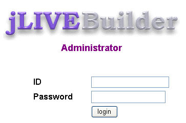
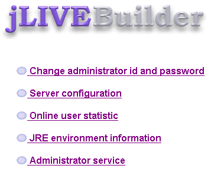
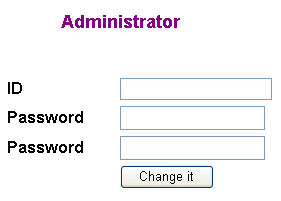
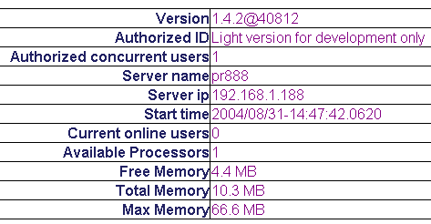
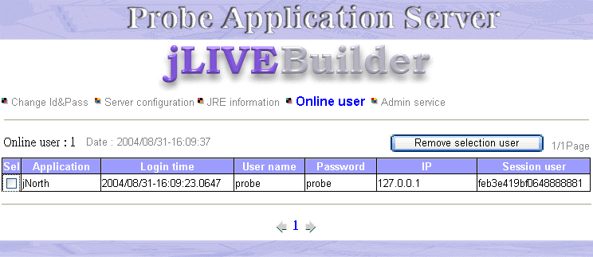
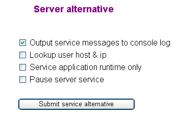

|

系統管理師可以使用瀏覽器經由
jLIVE™ middle ware 管理介面，調整
jLIVE™ middle ware 組態及管理線上使用者。在瀏覽器網址列輸入： http://HOST:IP/servlet/com.probe.jslive.ProbeServlet/
(例如：:
http://localhost:8080/servlet/com.probe.jslive.ProbeServlet/ )
即可開啟管理介面的登入畫面。

▲Top
輸入 ID 和 Password (預設值：ID = admin Password = admin)，按 login
登入管理介面。

▲Top
更改管理者 ID 與 Password (Change administrator id and password)

▲Top
伺服器組態 (Server configuration)

-
Version： jLIVE™ middle ware 版本。
-
Authorized ID： 授權 ID。
-
Authorized concurrent users：授權人數。
-
Server name：伺服器名稱。
-
Server ip：伺服器 IP。
-
Start time：啟動時間。
-
Current online users：目前線上人數。
-
Available Processors：伺服器 Processor 數
-
Free Memory： Total Memory
減去已使用的記憶體空間。
-
Total Memory：目前 JRE 所配置 (allocation)
的記憶體空間。初始值為 JVM 啟動時 -Xms 所設定的記憶體大小。
-
Max Memory：JRE 可以使用的最大記憶體空間。 JVM 啟動時
-Xmx 所設定的記憶體大小。
▲Top
目前線上人數管理 (Online user statistic)：系統管理師可以按選 Sel 核取方塊後，按下 Remove
selection user ，移除使用者。

▲Top
jLIVE™ middle ware 調整 (Admin service)

-
Output service messages to console log：
將 jLIVE™ middle ware 服務的訊息輸出至 console，訊息規格為 [應用程式名稱][使用者
Session
ID][服務代碼][服務開始時間][服務結束時間][服務內容訊息]。設計師可以根據服務開始時間及結束時間，計算出服務所費時間。適用於程式開發階段使用，正式執行時，輸出訊息至
console 可能會影響效率，建議執行時不要核取 (check) 此選項。
-
Lookup user host & ip：
以 IP 反查使用者 Host 名稱，建議不要核取 (check) 此選項，一般應用伺服器 IP 反查時，如果 IP 非註冊 FIX IP， 搜尋 DNS
的時間會很耗時，可能直到 timeout 才返回。核取 (check) 此選項會影響使用者登入時間。
-
Service application runtime only：
將此 jLIVE™ middle ware 設定為只服務應用程式執行，不接受 jLIVE Builder™
設計平台的連線服務請求。應用程式開發完成後應將此選項核取 (check) ，避免未經測試的應用程式模組，透過 jLIVE Builder™ 的線上更新傳送至 jLIVE™
middle ware。
-
Pause server service：暫停 jLIVE™
middle ware 服務，所有目前線上使用者，在服務請求時會接到暫停服務訊息，並且結束應用程式操作。此選項適用於當後端資料庫系統出錯或需重新啟動資料庫時。
▲Top
Copyright © 2001~
2004 Probe Technology . All Rights Reserved.
Questions, comments,
and suggestions to Service@probe.com.tw
|